Jeu du Mastermind++
Règles du Jeu :
Vous de devez trouver, en 12 tours maximum, une combinaison de 4 couleurs parmi 8 : Rouge, Jaune, Bleu, Vert, Blanc, Violet, Orange ou Fuchsia.
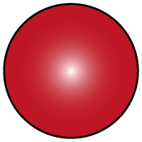 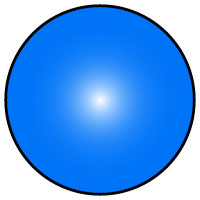
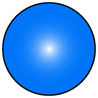
 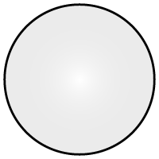
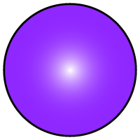
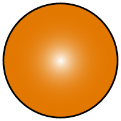
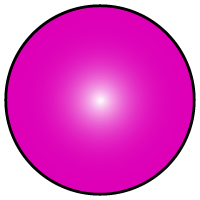
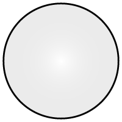
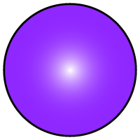
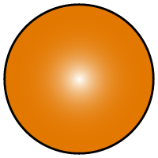
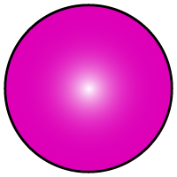
Après chaque tour, on vous indiquera :
Pour chaque couleur bien placée,
Pour chaque couleur présente mais mal placée.
Durant la partie, vous aurez accès à des statistiques et des probabilités qui s'affineront à chaque tour.